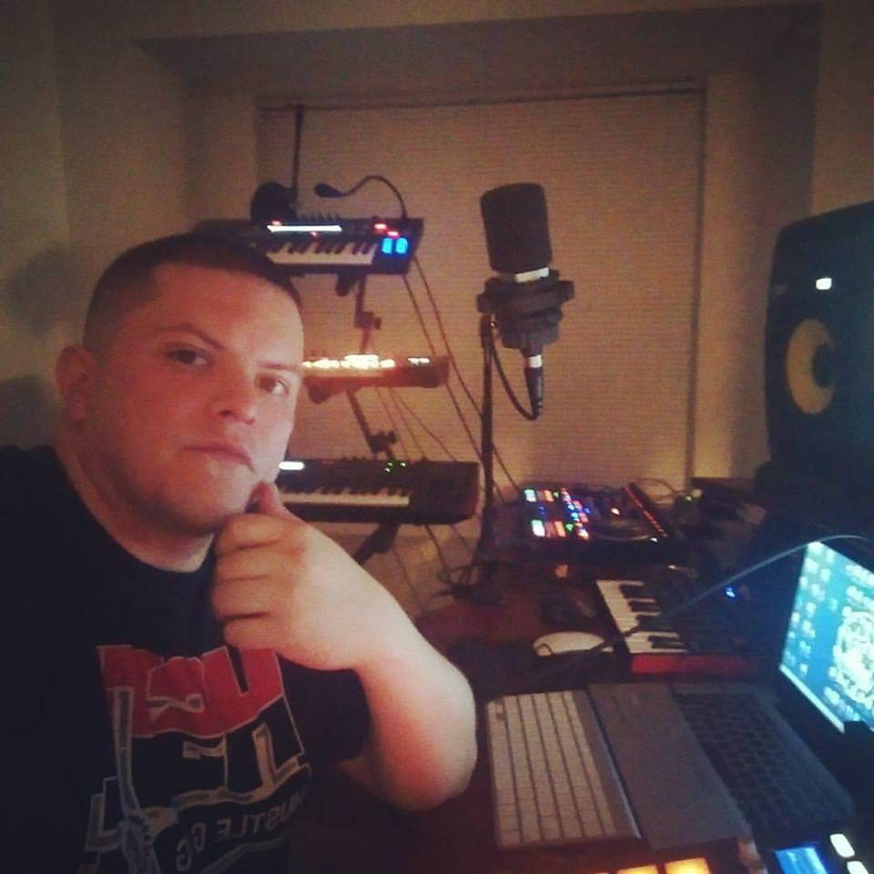

About me

Hello, my name is Oscar, 33, and I am currently attending SMU to become a full stack devloper. I reside in Fort Worth and work as a music producer. I went to Mediatech Institute, aka Dallas Sound Labs back in 2007 for audio engineering a music production. Ever since middle school, I have found myself indulging in anything that has to do with music. I have always considered myself a problem solver, so coding and programming seemed like a good match for me. I hope to be able to incorporate the skills I learn from the SMU Bootcamp into the music industry. I love animals, dogs specifically and consider myself a family oriented person. I like to cook, go to concerts, go to the gym and learn new things.